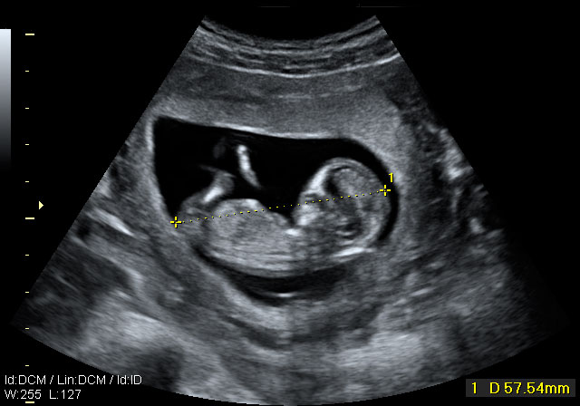

First slide label
Some representative placeholder content for the first slide.
Second slide label
Some representative placeholder content for the second slide.
Third slide label
Some representative placeholder content for the third slide.

Third slide label
Some representative placeholder content for the third slide.
Third slide label
Some representative placeholder content for the third slide.
¿Que es la psicología del desarrollo infantil?
8 de Abril del 2024 Por: Astrid Lilibeth Miralda Velasquez
Psicología evolutiva o del desarrollo humano. Estudia la forma en la que los seres humanos cambian a lo largo de su vida, comprende el estudio del ciclo vital, observa de qué manera cambian continuamente las acciones de un individuo y cómo éste reacciona a un ambiente que también está en constante cambio. Los psicólogos denominan desarrollo al cambio psicológico sistemático que se da a lo largo de la vida. Durante este proceso la persona va accediendo a estados más complejos y "mejores" que los anteriores. Esta es una rama de la psicología que ya tiene más de cien años. La psicología del desarrollo está interesada en explicar los cambios que tienen lugar en las personas con el paso del tiempo, es decir, con la edad. A esta materia también se le conoce con el nombre de “psicología del ciclo vital”, ya que estudia los cambios psicológicos a lo largo de toda la vida de las personas.
Ese sería, por tanto, el objeto de estudio de la psicología del desarrollo. Esos cambios que se dan en las personas a lo largo de la vida pueden ser explicados a través de unos factores que se encuentran enfrentados por parejas: la continuidad versus discontinuidad, la herencia versus el ambiente, y la normatividad versus la idiografía También el contexto en el que se desarrollan los sujetos nos permiten comprender mejor su evolución, así es necesario destacar el contexto histórico, el socioeconómico, el cultural e incluso el étnico, por citar los más importantes. Finalmente, vale la pena resaltar que el desarrollo debe ser entendido como un proceso continuo, global y dotado de una gran flexibilidad.
A lo largo del último siglo han sido varias las corrientes y los modelos teóricos que han aportado sus descubrimientos e investigaciones para explicar el fenómeno del cambio. En general cada uno de estos modelos tienen sus propias explicaciones, a veces contradictorias a las que se presentan desde otras teorías. Esa diversidad de paradigmas explicativos enriquecen la comprensión del fenómeno del desarrollo.
¿Como funciona la psicologia del desarrollo infantil?
La psicología del desarrollo infantil utiliza su comprensión en el área para evaluar el comportamiento y las habilidades de un infante, en relación con los patrones de desarrollo comunes. Esto les permite identificar posibles retrasos o problemas en su progreso.
Es el estudio que se realiza del comportamiento de los niños durante su crecimiento. Esto se efectúa desde su nacimiento hasta la adolescencia, lo cual es importante ya que es la etapa principal en que los niños amoldaron su personalidad.
Los enrutadores son dispositivos físicos o virtuales que facilitan las comunicaciones entre diferentes redes. Los enrutadores analizan la información para determinar la mejor manera de que los datos lleguen a su destino final. Los conmutadores conectan dispositivos y administran la comunicación de nodo a nodo dentro de una red, asegurando que los paquetes de información que viajan a través de la red lleguen a su destino final.
Cuidados básicos imprescindibles para niños
1. Alimentación saludable: Una nutrición adecuada es fundamental. Asegúrate de proporcionar una dieta equilibrada y variada, rica en frutas, verduras, proteínas y granos enteros. Evita los alimentos procesados y azucarados, fomentando hábitos saludables desde una edad temprana.
2. Higiene personal: Inculcar buenos hábitos de higiene es esencial. Enséñales a lavarse las manos regularmente, cepillarse los dientes adecuadamente y bañarse diariamente. Además, mantén un ambiente limpio y libre de gérmenes en el hogar.
3. Vacunación: No descuides las vacunas. Mantén al día las inmunizaciones de tus hijos según el calendario recomendado por los profesionales de la salud. Las vacunas son una forma efectiva de prevenir enfermedades y proteger la salud de tus pequeños.
4. Descanso adecuado: El sueño es vital para el crecimiento y desarrollo de los niños. Establece una rutina de sueño regular, asegurando que duerman las horas necesarias según su edad. Un ambiente tranquilo y cómodo facilitará un descanso reparador.
5.Tiempo de calidad: Dedica tiempo de calidad a tus hijos. Participa en actividades que estimulen su desarrollo cognitivo, emocional y físico. Juega con ellos, lee cuentos, conversa y bríndales el apoyo emocional que necesitan.
6. Seguridad en el hogar: Crea un entorno seguro en casa. Instala protectores en enchufes, asegura muebles que puedan volcarse y utiliza barreras de seguridad en escaleras. Además, mantén productos peligrosos fuera del alcance de los niños.
7. Salud emocional: No olvides cuidar la salud emocional de tus hijos. Escucha sus preocupaciones, valida sus emociones y fomenta una comunicación abierta. Promueve un ambiente de amor, respeto y comprensión.
8. Actividad física: Estimula la actividad física en los niños. Fomenta el juego al aire libre, practica deportes juntos y promueve un estilo de vida activo. La actividad física no solo beneficia su salud, sino que también fortalece su desarrollo cognitivo y social.
9. Apoyo médico: Mantén un seguimiento regular con el pediatra de tus hijos. Realiza visitas de control, informa sobre cualquier cambio en su salud y sigue sus recomendaciones médicas.
¿Qué es un psicólogo infantil?
Los psicólogos infantiles son expertos que se encargan de entender y explicar el desarrollo y el comportamiento del menor; para ello utilizan terapias, tanto individuales como colectivas, que ayudan a diagnosticar y tratar problemas sociales, emocionales, afectivos y de aprendizaje, que puedan presentarse en el niño.
Problemas más comunes
Los problemas psicológicos más frecuentes en los niños son:
Acoso escolar o bullying: Es el abuso o maltrato, sin motivo evidente, que sufre un menor intencionada y repetidamente por parte de uno o varios compañeros del ámbito académico. Puede ser maltrato físico, psíquico, social o verbal.
Amigos imaginarios: A pesar de ser un fenómeno que enriquece la imaginación y la interacción social, es importante observar la evolución del problema. Los “amigos imaginarios” suelen ser casos idealizados (duendes, hadas y superhéroes) o amistades invisibles con las que compartir sus juegos.
Fobia escolar: Es la incapacidad total o parcial del niño de acudir al colegio a causa de un miedo irracional sobre algún aspecto de la situación escolar que le crea un nivel de ansiedad elevado.
Autismo: Es un trastorno neuropsiquiátrico que se caracteriza por el aislamiento social, las dificultades en la comunicación y los patrones estereotipados de conducta.
Depresión infantil: Es un trastorno que se caracteriza por una alteración en el estado de ánimo en el menor que puede llegar a sumirse en un estado de tristeza profundo o padecer bruscos cambios de humor.
Divorcio de los progenitores: El divorcio de los padres provoca en el menor un impacto emocional, que puede provocar diferentes actitudes que afecten a distintos ámbitos de su alrededor: sociabilidad, autoestima, estudio, comportamiento, etc.
Tics nerviosos: Son movimientos involuntarios bruscos, cortos y repetitivos de cualquier grupo muscular. Las causas de este trastorno pueden ser físicas o psicológicas y, en consecuencia, pueden provocar problemas conductuales y sociales. Generalmente, este trastorno desaparece a los meses.
Trastorno por déficit de atención e hiperactividad infantil (TDAH): Es un trastorno del comportamiento que se caracteriza por distracción, períodos de atención transitoria, inquietud e inestabilidad emocional, hiperactividad y conductas impulsivas.